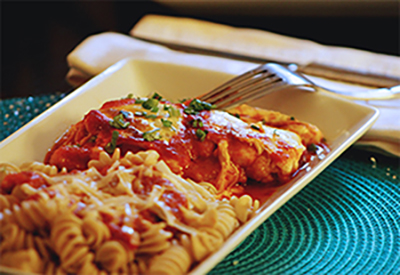

One of my favorite simple and healthy recipes is a healthy version of chicken parmigiana. Big surprise here, the chicken isn’t breaded or fried. We’re also using a multigrain pasta to add a little fiber to the party! (Barilla Plus, is delish!)
The following is a recipe for four. My rule of thumb when I’m deciding how much chicken breast to use is two servings for every medium/large chicken breast, or about 4oz.)

Delicious Chicken Parm with Multigrain Pasta
COOKWARE
1 10-12” Stainless Steel/Teflon Pan
1 Oven safe baking dish or pan (13x9 or about that size).
Large (3-5 qt) Pot for making multigrain pasta of your choice. (Remember to add a little bit of oil and salt. The water should be salty, like the Mediterranean.)
1 lb. boneless/skinless chicken breasts cut into cutlets. (slice the chicken breast lengthwise. Voila! A cutlet! Or purchase chicken breast cutlets, if you want to skip this step.)
1 jar of your favorite marinara or pasta sauce. ( I like to use sauce that is lower in sodium, about 250-350mg. Because we’re going to season the meat, and that adds more sodium).
8 oz package of fresh mozzarella cheese. Cut into about 10 slices (If fresh mozzarella isn’t available, pre-packaged slices work as well.)
1/3 cup of all purpose flour
Good Extra Virgin Olive Oil
Salt and pepper, to taste.
DIRECTIONS
First things first! Preheat your oven to 350 degrees. This will save you time later.
Normally, I like to pound the chicken thin (1/2 in. or so), so that it cooks quickly. I take my trusty cutting board. Place the breast half. Cover it with a large piece of clear wrap, and take a mallet to it. The plastic wrap helps you to not splatter chicken juice all over the counter (and yourself) and to help maintain its shape.
Season with salt and pepper.
Lightly coat with flour.
Set your pan to a medium heat on the stove. Add about three tablespoons of olive oil.
When the olive oil is hot, place 1-2 pieces of chicken in the pan. (since the chicken has been pounded, it should be a rather large flat piece.) If only one fits, cook them one at a time. Cook about 2 minutes on each side.
Remember that they are going to bake in the oven, so they don’t need to cook all the way through. Mostly through, not all through! Cook the chicken in batches as needed. Set aside.
Arrange the chicken in a shallow baking dish/pan.
Pour 2/3rds of the bottle over the chicken. Reserve the rest for extra on the pasta, as this sauce will reduce in the oven.
Place cheese over chicken. Try to leave some space between the pieces so that when it bakes you know where the chicken is under the cheese.
Bake in oven for about 30 minutes, or until cheese is bubbling and delicious.
Cook the multigrain pasta of your choice while the chicken bakes. It takes just a few minutes longer than traditional pasta. Heat your remaining sauce in a small pot or in a covered dish in the microwave.